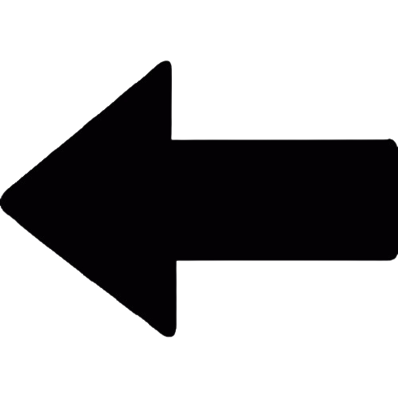

 SUMÁRIO
SOBRE MIM
Quem sou?
Meu nome é Kawan Dias, sou editor de vídeos e desenvolvedor, especializado em Python e HTML5 trabalho como Editor de vídeos no Instituto Federal do Paraná e participo do Projeto Capacita.
Ex-goleiro do Operário Ferroviário, time atualmente na série B do campeonato brasileiro, atuei profissionalmente por 4 anos. Onde tive diversas experiências que me ajudaram a tornar-me o profissional que sou hoje.
Como falar comigo?
Minhas Formações
- Curso de Inglês Completo - Proficiência, FLuente.
- Curso de Informática Completo - Básico e Avançado.
- Curso de Algoritmo Completo - Lógica de Algoritmos.
- Curso de Marketing Digital Completo - Técnicas e estratégias de Marketing.
- Curso de Edição de Vídeo 1 Completo - Edição em Kinemaster.
- Curso de Edição de Vídeo 2 Completo - Edição em Clipchamp.
- Curso de Edição de Vídeo 3 Completo - Edição em Da Vinci Resolve.
- Curso de Edição de Vídeo 4 Completo - Edição em Capcut (PC & MOBILE).
- Curso de CSS + HTML Completo - Criação de sites (Front-end/Back End).
- Curso de Figma Completo - Criação e Design de sites (Front-end).
- Evento Hackaton IFPR 2023 Completo - Tecnologia e Projetos.